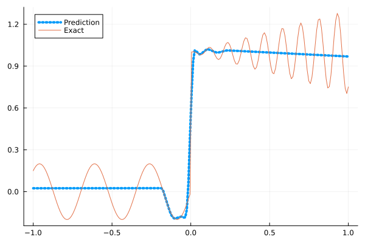
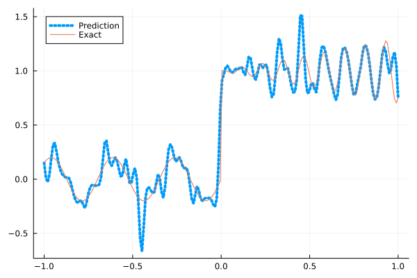
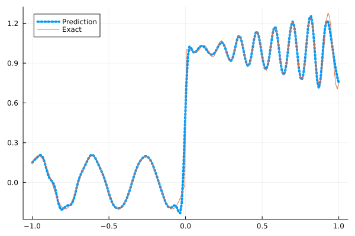
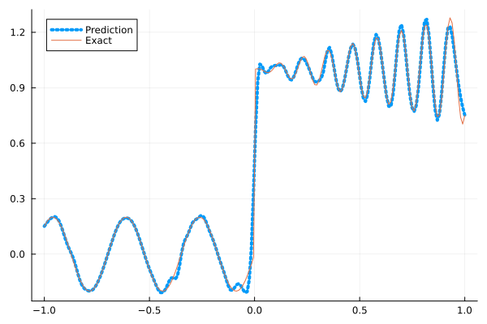
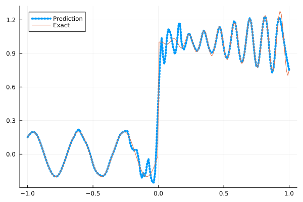

Fitting a nonlinear discontinuous function
This example is taken from here. However, we do not use adaptive activation functions. Instead, we show that using suitable non-parametric activation functions immediately performs better.
Consider the following discontinuous function with discontinuity at $x=0$:
\[u(x)= \begin{cases}0.2 \sin (18 x) & \text { if } x \leq 0 \\ 1+0.3 x \cos (54 x) & \text { otherwise }\end{cases}\]
The domain is $[-1,1]$. The number of training points used is 50.
Import pacakges
using Lux, Sophon
using NNlib, Optimisers, Plots, Random, StatsBase, ZygoteDataset
function u(x)
if x <= 0
return 0.2 * sin(18 * x)
else
return 1 + 0.3 * x * cos(54 * x)
end
end
function generate_data(n=50)
x = reshape(collect(range(-1.0f0, 1.0f0, n)), (1, n))
y = u.(x)
return (x, y)
endgenerate_data (generic function with 2 methods)Let's visualize the data.
x_train, y_train = generate_data(50)
x_test, y_test = generate_data(200)
Plots.plot(vec(x_test), vec(y_test),label=false)
Naive Neural Nets
First we demonstrate show naive fully connected neural nets could be really bad at fitting this function.
model = FullyConnected((1,50,50,50,50,1), relu)Chain(
layer_1 = Dense(1 => 50, relu), # 100 parameters
layer_2 = Dense(50 => 50, relu), # 2_550 parameters
layer_3 = Dense(50 => 50, relu), # 2_550 parameters
layer_4 = Dense(50 => 50, relu), # 2_550 parameters
layer_5 = Dense(50 => 1), # 51 parameters
) # Total: 7_801 parameters,
# plus 0 states, summarysize 80 bytes.Train the model
function train(model, x, y)
ps, st = Lux.setup(Random.default_rng(), model)
opt = Adam()
st_opt = Optimisers.setup(opt,ps)
function loss(model, ps, st, x, y)
y_pred, _ = model(x, ps, st)
mes = mean(abs2, y_pred .- y)
return mes
end
for i in 1:2000
gs = gradient(p->loss(model,p,st,x,y), ps)[1]
st_opt, ps = Optimisers.update(st_opt, ps, gs)
if i % 100 == 1 || i == 2000
println("Epoch $i || ", loss(model,ps,st,x,y))
end
end
return ps, st
endtrain (generic function with 1 method)Plot the result
@time ps, st = train(model, x_train, y_train)
y_pred = model(x_test,ps,st)[1]
Plots.plot(vec(x_test), vec(y_pred),label="Prediction",line = (:dot, 4))
Plots.plot!(vec(x_test), vec(y_test),label="Exact",legend=:topleft)Epoch 1 || 0.14905039152245222
Epoch 101 || 0.01613680104240562
Epoch 201 || 0.01592185420180738
Epoch 301 || 0.01588445432407267
Epoch 401 || 0.01588464774514003
Epoch 501 || 0.01584956234329264
Epoch 601 || 0.01585628835260329
Epoch 701 || 0.01583621881275553
Epoch 801 || 0.01583368096897122
Epoch 901 || 0.0158755731898838
Epoch 1001 || 0.01583311450880723
Epoch 1101 || 0.015834957036027185
Epoch 1201 || 0.015832974311272886
Epoch 1301 || 0.015983083658795992
Epoch 1401 || 0.015832922416233883
Epoch 1501 || 0.01583284473092446
Epoch 1601 || 0.01586134549552332
Epoch 1701 || 0.0158328351532594
Epoch 1801 || 0.015832792014674787
Epoch 1901 || 0.015832775668463212
Epoch 2000 || 0.015802363619960208
11.706251 seconds (20.70 M allocations: 1.844 GiB, 3.16% gc time, 94.16% compilation time)
Siren
We use four hidden layers with 50 neurons in each.
model = Siren(1,50,50,50,50,1; omega = 30f0)Chain(
layer_1 = Dense(1 => 50, sin), # 100 parameters
layer_2 = Dense(50 => 50, sin), # 2_550 parameters
layer_3 = Dense(50 => 50, sin), # 2_550 parameters
layer_4 = Dense(50 => 50, sin), # 2_550 parameters
layer_5 = Dense(50 => 1), # 51 parameters
) # Total: 7_801 parameters,
# plus 0 states, summarysize 88 bytes.@time ps, st = train(model, x_train, y_train)
y_pred = model(x_test,ps,st)[1]
Plots.plot(vec(x_test), vec(y_pred),label="Prediction",line = (:dot, 4))
Plots.plot!(vec(x_test), vec(y_test),label="Exact",legend=:topleft)Epoch 1 || 0.709649750847722
Epoch 101 || 0.0004281321422806196
Epoch 201 || 1.5687782737313318e-6
Epoch 301 || 4.859227570967443e-9
Epoch 401 || 1.1238569183108797e-11
Epoch 501 || 4.302132073046974e-13
Epoch 601 || 1.0549806278663406e-13
Epoch 701 || 7.320838793735257e-14
Epoch 801 || 5.002872051340114e-14
Epoch 901 || 8.523810913791879e-14
Epoch 1001 || 4.7389193578041123e-14
Epoch 1101 || 5.741930240626957e-14
Epoch 1201 || 7.886202845797433e-14
Epoch 1301 || 5.757682399865358e-14
Epoch 1401 || 4.5683076642150475e-14
Epoch 1501 || 5.216960879405461e-14
Epoch 1601 || 8.290205798017927e-14
Epoch 1701 || 8.428197061846346e-14
Epoch 1801 || 1.0442423055209188e-13
Epoch 1901 || 9.468297427683628e-14
Epoch 2000 || 7.989425524971301e-14
3.949709 seconds (5.85 M allocations: 1.180 GiB, 4.63% gc time, 78.63% compilation time)
As we can see the model overfits the data, and the high frequencies cannot be optimized away. We need to tunning the hyperparameter omega
model = Siren(1,50,50,50,50,1; omega = 10f0)Chain(
layer_1 = Dense(1 => 50, sin), # 100 parameters
layer_2 = Dense(50 => 50, sin), # 2_550 parameters
layer_3 = Dense(50 => 50, sin), # 2_550 parameters
layer_4 = Dense(50 => 50, sin), # 2_550 parameters
layer_5 = Dense(50 => 1), # 51 parameters
) # Total: 7_801 parameters,
# plus 0 states, summarysize 88 bytes.@time ps, st = train(model, x_train, y_train)
y_pred = model(x_test,ps,st)[1]
Plots.plot(vec(x_test), vec(y_pred),label="Prediction",line = (:dot, 4))
Plots.plot!(vec(x_test), vec(y_test),label="Exact",legend=:topleft)Epoch 1 || 1.4778793617192423
Epoch 101 || 0.008739577499398448
Epoch 201 || 0.0067176950982476705
Epoch 301 || 0.005427381213885973
Epoch 401 || 0.004343545315778795
Epoch 501 || 0.0033407588147560175
Epoch 601 || 0.0025177009897229506
Epoch 701 || 0.001897146773399591
Epoch 801 || 0.0013863115009307297
Epoch 901 || 0.0009581467656227129
Epoch 1001 || 0.0006265754088285918
Epoch 1101 || 0.00039695725837922164
Epoch 1201 || 0.00024856631866910063
Epoch 1301 || 0.00015530406609355727
Epoch 1401 || 9.830339182705263e-5
Epoch 1501 || 6.465105499179123e-5
Epoch 1601 || 4.5349607930294486e-5
Epoch 1701 || 3.4345926927224264e-5
Epoch 1801 || 2.7828630199295904e-5
Epoch 1901 || 2.3596306631632282e-5
Epoch 2000 || 2.0522472460492368e-5
0.721684 seconds (1.15 M allocations: 891.424 MiB, 6.44% gc time)
Gaussian activation function
We can also try using a fully connected net with the gaussian activation function.
model = FullyConnected((1,50,50,50,50,1), gaussian)Chain(
layer_1 = Dense(1 => 50, gaussian), # 100 parameters
layer_2 = Dense(50 => 50, gaussian), # 2_550 parameters
layer_3 = Dense(50 => 50, gaussian), # 2_550 parameters
layer_4 = Dense(50 => 50, gaussian), # 2_550 parameters
layer_5 = Dense(50 => 1), # 51 parameters
) # Total: 7_801 parameters,
# plus 0 states, summarysize 80 bytes.@time ps, st = train(model, x_train, y_train)
y_pred = model(x_test,ps,st)[1]
Plots.plot(vec(x_test), vec(y_pred),label="Prediction",line = (:dot, 4))
Plots.plot!(vec(x_test), vec(y_test),label="Exact",legend=:topleft)Epoch 1 || 0.2952349460739522
Epoch 101 || 0.0052265397766666525
Epoch 201 || 0.0037963681033619965
Epoch 301 || 0.0015235138801362293
Epoch 401 || 0.00011227459234872949
Epoch 501 || 4.9453086696507485e-5
Epoch 601 || 3.834614220985932e-7
Epoch 701 || 1.8782245343691032e-7
Epoch 801 || 4.410891677074118e-5
Epoch 901 || 8.397165252720274e-8
Epoch 1001 || 1.3340774764767115e-8
Epoch 1101 || 2.6431579184680255e-6
Epoch 1201 || 4.929710054780318e-8
Epoch 1301 || 3.9140683293713735e-9
Epoch 1401 || 2.5730256444681736e-10
Epoch 1501 || 1.568232232856446e-5
Epoch 1601 || 2.0300444850477128e-8
Epoch 1701 || 3.5402180927054755e-6
Epoch 1801 || 5.092105061417297e-7
Epoch 1901 || 4.326209899996318e-8
Epoch 2000 || 7.870682215395066e-7
4.319294 seconds (8.28 M allocations: 1.292 GiB, 4.13% gc time, 82.01% compilation time)
Quadratic activation function
quadratic is much cheaper to compute compared to the Gaussain activation function.
model = FullyConnected((1,50,50,50,50,1), quadratic)Chain(
layer_1 = Dense(1 => 50, quadratic), # 100 parameters
layer_2 = Dense(50 => 50, quadratic), # 2_550 parameters
layer_3 = Dense(50 => 50, quadratic), # 2_550 parameters
layer_4 = Dense(50 => 50, quadratic), # 2_550 parameters
layer_5 = Dense(50 => 1), # 51 parameters
) # Total: 7_801 parameters,
# plus 0 states, summarysize 80 bytes.@time ps, st = train(model, x_train, y_train)
y_pred = model(x_test,ps,st)[1]
Plots.plot(vec(x_test), vec(y_pred),label="Prediction",line = (:dot, 4))
Plots.plot!(vec(x_test), vec(y_test),label="Exact",legend=:topleft)Epoch 1 || 0.8922293906469931
Epoch 101 || 0.0066882238479566
Epoch 201 || 0.006012502327051293
Epoch 301 || 0.005459953533676232
Epoch 401 || 0.004753265392131045
Epoch 501 || 0.0039526377778629496
Epoch 601 || 0.0030340300755287842
Epoch 701 || 0.0021753394721557044
Epoch 801 || 0.0014289185199014365
Epoch 901 || 0.0008448667677444735
Epoch 1001 || 0.0004353720163905969
Epoch 1101 || 0.000145008566824769
Epoch 1201 || 2.677749935431056e-5
Epoch 1301 || 3.125572004612287e-6
Epoch 1401 || 7.160968068348398e-7
Epoch 1501 || 3.9951710391381746e-7
Epoch 1601 || 2.7583678120978696e-7
Epoch 1701 || 2.0478665062457673e-7
Epoch 1801 || 1.9813018746120622e-7
Epoch 1901 || 1.4365167513895423e-7
Epoch 2000 || 5.2382394069699e-7
3.381902 seconds (5.22 M allocations: 1.147 GiB, 4.72% gc time, 84.71% compilation time)
Conclusion
"Neural networks suppresse high frequency components" is a misinterpretation of the spectral bias. The accurate way of putting it is that the lower frequencies in the error are optimized first in the optimization process. This can be seen in Siren's example of overfitting data, where you do not have implicit regularization. The high frequency in the network will never go away because it has fitted the data perfectly.
Mainstream attributes the phenomenon that neural networks "suppress" high frequencies to gradient descent. This is not the whole picture. Initialization also plays an important role. Siren mitigats this problem by initializing larger weights in the first layer, while activation functions such as gassian have large enough gradients and sufficiently large support of the second derivative with proper hyperparameters. Please refer to Vincent Sitzmann, Julien Martel, Alexander Bergman, David Lindell, Gordon Wetzstein (2020), Sameera Ramasinghe, Simon Lucey (2021) and Sameera Ramasinghe, Lachlan MacDonald, Simon Lucey (2022) if you want to dive deeper into this.